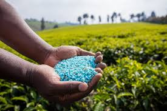
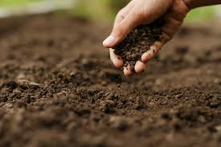
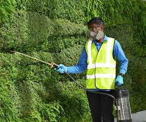
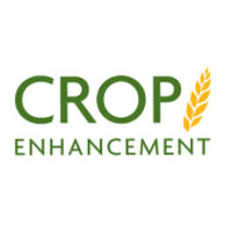

Fertilizers
Our premium fertilizers are designed to boost crop yield and improve soil health. We offer a variety of fertilizers tailored for different soil types and crops, ensuring maximum productivity and sustainability.
Soil Conditioners
Our soil conditioners help in enhancing soil structure, increasing water retention, and improving nutrient availability. They are essential for maintaining soil health and ensuring robust plant growth.
Pest Control Solutions
Protect your crops with our range of eco-friendly pest control solutions. Designed to target common agricultural pests, our products are safe for the environment and effective in maintaining healthy crops.
Crop Enhancement Products
Maximize your crop's potential with our enhancement products. From growth stimulants to yield boosters, our solutions are crafted to meet the evolving needs of modern agriculture.